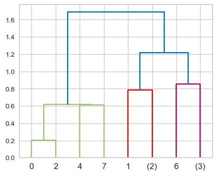
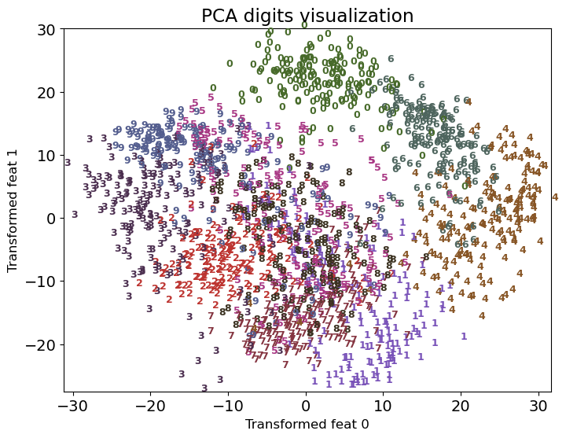

Unsupervised Learning
Unsupervised Learning Introduction
Type of machine learning algorithm used to draw inferences from datasets consisting of input data without labeled responses
Examples:
- Clustering
- Dimensionality Reduction
K-Means Clustering
Clustering Motivation
- Labeling data is expensive and time-consuming
- Clustering is a way to group based on similarity
- Can get a sense of the structure of the data without labeled responses
- Clustering: Task of partitioning data into groups called clusters based on similarity
- Goal:
- Points in the same cluster should be as similar as possible
- Points in different clusters should be as different as possible
- Can have multiple different clusters in the same dataset
- e.g. in dataset of food can have clusters of:
- appetizers, main courses, desserts
- cuisines
- healthy vs unhealthy
- e.g. in dataset of food can have clusters of:
Comparisons with kNN: | k-Means | k-Nearest Neighbors | | ——- | ——————– | | Unsupervised | Supervised | | Clustering | Classification | | Parametric | Non-parametric | | k = number of clusters | k = number of neighbors |
Common Applications
- Data Exploration
- Summarize/ compress data
- Partition data into groups
- Customer Segmentation
- Group customers based on purchasing behavior
- Target marketing
- Document Clustering
- Group similar documents together
- Topic modeling Other applications: Medical imaging, Anomaly detection, Image segmentation, Inputting missing data, data compression, etc.
K-Means
- One of the most popular clustering algorithms
- Simple and easy to implement
- Basic Algorithm:
- Randomly initialize \(K\) centroids
- Assign each data point to the nearest centroid
- Update the centroids to the mean of the data points assigned to it
- Repeat steps 2 and 3 until convergence
- Properties:
- Will always converge (not necessarily to the right answer)
- Sensitive to intialization
- Terminates when centroids do not change
- Makes linear decision boundaries
- MUST SCALE DATA before applying K-means
- Because K-means uses distance
- If features are on different scales, the clustering will be biased towards the features with larger scales
- Input:
- \(X\): Set of \(n\) data points
- \(K\): Number of clusters
- Output:
- \(K\) clusters with centroids \(\mu_1, \mu_2, \ldots, \mu_K\)
from sklearn.cluster import KMeans
kmeans = KMeans(n_clusters=3, n_init='auto')
kmeans.fit(X); # only need X
kmeans.labels_ # cluster assignments
kmeans.cluster_centers_ # cluster centroids
kmeans.predict(new_data) # predict cluster for new dataChoosing K
- K is a hyperparameter
- As K increases -> smaller clusters
- No perfect way to choose K
- Elbow Method:

- Specific to k-means
- \(\text{Inertia} = \text{sum of intra-cluster distances}\)
- Sum of centroid to point distances of all points in the cluster of all clusters \(\sum_{i=1}^{K} \sum_{x \in C_i} ||x - \mu_i||^2\)
- Inertia decreases as K increases, until it reaches 0 when K = n
- Plot inertia vs K
- Elbow point: point where inertia starts to decrease more slowly
- Choose K at elbow point
from yellowbrick.cluster import KElbowVisualizer
model = KMeans(n_init='auto')
visualizer = KElbowVisualizer(model, k=(1, 10))
visualizer.fit(XX) # Fit the data to the visualizer
visualizer.show();- Silhouette Score:
Not dependent on cluster centers -> can be used to compare different clustering algorithms
Gets worst as K increases, since being closer to neigouring clusters \[\text{Silhouette Score} = \frac{b - a}{\max(a, b)}\]
\(a\): Mean distance between a sample and all other points in the same cluster
\(b\): Mean distance between a sample and all other points in the next nearest cluster
Range: \([-1, 1]\)
- 1: Object is well matched to its own cluster and poorly matched to neighboring clusters (BEST)
- 0: Object is not matched to its own cluster and might be better in neighboring clusters
- -1: Object is poorly matched to its own cluster and well matched to neighboring clusters (WORST)
from yellowbrick.cluster import SilhouetteVisualizer
model = KMeans(2, n_init='auto', random_state=42)
visualizer = SilhouetteVisualizer(model, colors="yellowbrick")
visualizer.fit(XX) # Fit the data to the visualizer
visualizer.show();- y-axis: Sample number (similar thickness = balanced cluster sizes)
- x-axis: Silhouette score
Gaussian Mixture Models (High-Level Overview)
- Motivation:
- K-means makes linear decision boundaries
- GMMs can have more flexible cluster shapes

from sklearn.mixture import GaussianMixture
gmm = GaussianMixture(n_components=3, covariance_type='full')
gmm.fit(X_train)
gmm_labels = gmm.predict(X_train)
# Get values
gmm.means_ # cluster means (size: K x n_features)
gmm.covariances_ # cluster covariances (size: K x n_features x n_features)
gmm.weights_ # cluster weights (size: K)covariance_type:full: Each component has its own general covariance matrix- size: \(K \times n\_features \times n\_features\)
tied: All components share the same general covariance matrix- size: \(n\_features \times n\_features\)
diag: Each component has its own diagonal covariance matrix- size: \(K \times n\_features\)
spherical: Each component has its own single variance- size: \(K\)
How GMMs Work
\[P(x) = \sum_{k=1}^{K} \pi_k \mathcal{N}(x | \mu_k, \Sigma_k)\]
\(P(x)\): Probability of observing \(x\)
\(\pi_k\): Weight of the \(k\)th Gaussian (between 0 and 1)
\(k\): Number of clusters
\(\mathcal{N}(x | \mu_k, \Sigma_k)\): Gaussian distribution with mean \(\mu_k\) and covariance \(\Sigma_k\)
Generative Model: models the probability of a data point being generated from the mixture of Gaussians
The generative story of the model assumes that each data point in the dataset is generated from one of the Gaussian components
- Choose \(k\) with probability \(\pi_k\)
- Generate data point from \(\mathcal{N}(x | \mu_k, \Sigma_k)\)
High Level Algorithm (non-convex optimization):
- Initialize \(\pi_k, \mu_k, \Sigma_k\) (sensitive to init, can init with k-means)
- E-step: Compute the probability of each data point belonging to each cluster
- M-step: Update \(\pi_k, \mu_k, \Sigma_k\) to maximize the likelihood of the data
- Repeat steps 2 and 3 until convergence
Under the hood, GMMs use the Expectation-Maximization (EM) algorithm.
- Basic idea: treat cluster assignments as hidden variables and iteratively update them
- E-step: for each point, compute the probability of it belonging to each cluster
- M-step: for each cluster, update the parameters to maximize the likelihood of the data
Other Properties:
- Can constrain the covariance matrix
- Number of clusters is a hyperparameter and has a significant impact on the model
DBSCAN
- Density-Based Spatial Clustering of Applications with Noise
- Idea: Clusters are dense regions in the data space, separated by low-density regions
- Addresses K-Means’ weaknesses:
- No need to specify number of clusters
- Can find clusters of arbitrary shapes
- Can identify points that don’t belong to any cluster (points don’t have to belong to any cluster, label =
-1) - Initialization is not a problem
- Comparison to K-means:
- does not have to assign all points to clusters
- no
predictmethod unlike K-means - non-parametric
| Pros | Cons |
|---|---|
| Can find clusters of arbitrary shapes | cannot predict new data |
| Can detect outliers | Needs tuning of 2 non-trivial hyperparameters |
- DBSCAN Failure Cases:
- Different densities of clusters
from sklearn.cluster import DBSCAN
dbscan = DBSCAN(eps=0.5, min_samples=5)
dbscan.fit(X)
dbscan.labels_eps(default=0.5): maximum distance between two samples for one to be considered as in the neighborhood of the other.min_samples(default = 5): number of samples in a neighborhood for a point to be considered as a core point
How DBSCAN works
Kinds of points:
- Core point: A point that has at least
min_samplespoints withinepsof it - Border point: A point that is within
epsof a core point, but has less thanmin_samplespoints withinepsof it - Noise point: A point that is neither a core point nor a border point
- Core point: A point that has at least
Algorithm:
- randomly pick a point that has not been visited
- Check if it’s a core point
- See
epsdistance around the point if there aremin_samplespoints
- See
- If yes, start a cluster around this point
- Check if neighbors are core points and repeat
- Once no more core points, pick another random point and repeat
Evaluating DBSCAN Clusters
- Silhouette Method
- Cannot use elbow method because no centroids
from yellowbrick.cluster import SilhouetteVisualizer
model = DBSCAN(eps=0.5, min_samples=5)
model.fit(X)
# Silhoutte is designed for k-means, so we need to do this
n_clusters = len(set(model.labels_))
dbscan.n_clusters = n_clusters
dbscan.predict = lambda x: model.labels_
visualizer = SilhouetteVisualizer(dbscan, colors='yellowbrick')
visualizer.fit(X)
visualizer.show()Hierarchical Clustering
- Hard to decide how many clusters
- So get complete picture of similarity between points then decide
- Main idea:
- Start with each point as a cluster
- Merge the closest clusters
- Repeat until only a single cluster remains (n-1 steps)
- Visualized as a
dendrogram
from matplotlib import pyplot as plt
from scipy.preprocessing import StandardScaler
from scipy.cluster.hierarchy import dendrogram, ward
X_scaled = StandardScaler().fit_transform(X)
linkage_array = ward(X_scaled) # see below for linkage criteria
# Plot the dendrogram
ax = plt.subplot()
dendrogram(linkage_array, ax=ax, color_threshold=3)Dendrogram

- x-axis: data points
- y-axis: distance between clusters
- Is a tree like plot
- New parent node for each 2 clusters that are merged
- Length of the vertical line at the point of merging is the distance between the clusters
Linkage Criteria
- Linkage Criteria determines how to find similarity between clusters
- Single Linkage:
- Merge smallest min distance between points in two clusters
- Can lead to chaining
scipy.cluster.hierarchy.single
- Complete Linkage:
- Merge smallest max distance between points in two clusters
- Can lead to crowding (tight clusters)
scipy.cluster.hierarchy.complete
- Average Linkage:
- Merge smallest mean distance between points in two clusters
scipy.cluster.hierarchy.average
- Ward’s Method:
- Minimizes the variance of the clusters being merged
- Leads to equally sized clusters
scipy.cluster.hierarchy.ward
Simplifying the Dendrogram
Truncation:
scipy.cluster.hierarchy.dendrogramhas atruncate_modeparameterTwo levels:
lastp: show last p merged clusters (only p nodes are shown)level: level is all nodes withpmerges from the root

- Flatten
- Directly cut the dendogram at certain condition (e.g. distance or max number of clusters)
from scipy.cluster.hierarchy import fcluster
# 3 is the max distance
hier_labels = fcluster(linkage_array, 3 , criterion='distance')
# Based on max number of clusters (4 max clusters)
hier_labels = fcluster(linkage_array, 4 , criterion='maxclust')Principal Component Analysis (PCA)
Dimensionality Reduction Motivation
- Curse of Dimensionality
- As the number of dimensions increases, the volume of the space increases so fast that the available data become sparse
- Data Visualization
- It is difficult to visualize data in high dimensions
- Computational Efficiency
- Many algorithms are computationally infeasible in high dimensions
PCA Overview
- Goal
- Find a low-dimensional representation of the data that captures as much of the variance as possible
- Approach
- Find the lower dimension hyperplane that minimizes the reconstruction error
- Model is the best-fit hyperplane
PCA Terminology
\[X = ZW\]
\[(n \times d) = (n \times k) \cdot (k \times d)\]
Usually \(k << d\)
- \(X\): original data, (\(n \times d\))
- \(Z\): coordinates in the lower dimension, (\(n \times k\))
- \(W\): lower dimension hyperplane, (\(k \times d\))
- \(W\) is the principal components
- Rows of \(W\) are orthogonal to each other
Can reconstruct the original data with some error:
\[\hat{X} = ZW\]
Note: if \(k = d\), then \(Z\) is not necessarily \(X\) but \(\hat{X} = X\) (Frobenius norm)
- Objective/ Loss Function:
- Minimize reconstruction error \(\|ZW - X\|_F^2\)
- Frobeinus norm \(||A||_F = \sqrt{\sum_{i=1}^m \sum_{j=1}^n a_{ij}^2}\)
- NOT the same as least squares
- LS is vertical distance, PCA is orthogonal distance
- Minimize reconstruction error \(\|ZW - X\|_F^2\)
PCA Math
Singular Value Decomposition (SVD)
\[A = USV^T\]
- \(A\): original data, (\(n \times d\))
- \(U\): left singular vectors, (\(n \times n\))
- orthonormal columns \(U_i^TU_j = 0\) for all \(i \neq j\)
- \(S\): diagonal matrix of singular values, (\(n \times d\))
- square root of eigenvalues of \(A^TA\) or \(AA^T\)
- corresponds to the variance of the data along the principal components (in decreasing order)
- \(V\): right singular vectors, (\(d \times d\))
- orthonormal columns (eigenvectors)
- principal components (get the first \(k\) columns)
For dimensionality reduction, we can use the first \(k\) columns of \(U\) and the first \(k\) rows of \(V^T\) (equal to first \(k\) columns of \(V\))
PCA Algorithm
- Center the data (subtract the mean of each column)
- Compute the SVD of the centered data to get the principal components \(W\).
- \(W\) is the first \(k\) columns of \(V\)
- Variance of each PC is the square of the singular value \(s_i^2\)
- Drop the PCs with the smallest variance
Uniquess of PCA
- PCA are not unique, similar to eigenvectors
- Can add constraints to make it closer to unique:
- Normalization: \(||w_i|| = 1\)
- Orthogonality: \(w_i^Tw_j = 0\) for all \(i \neq j\)
- Sequential PCA: \(w_1^Tw_2 = 0\), \(w_2^Tw_3 = 0\), etc.
- The principal components are unique up to sign
Choosing Number of Components
- No definitive rule
- Can look at:
- Explained variance ratio
- Reconstructions plot
from sklearn.decomposition import PCA
pca = PCA()
pca.fit(samples)
# Plot the explained variances
plt.plot(np.cumsum(pca.explained_variance_ratio_))PCA and Multicollinearity
- PCA can be used to remove multicollinearity
- Concept: the principal components are orthogonal to each other so they should not be correlated
PCA Applications
- Data Compression
- Can use the first \(k\) principal components to represent the data
- Feature Extraction
- Can use the first \(k\) principal components as features
- Visualization of High-Dimensional Data
- Can visualize the data in 2D or 3D by using the first 2 or 3 principal components
- Dimensionality Reduction
- Anomaly Detection
- Can use the reconstruction error to detect anomalies/ outliers (if the error is too large)
- Outliers = high reconstruction error
PCA in Python
from sklearn.decomposition import PCA
from sklearn.preprocessing import StandardScaler
from sklearn.pipeline import make_pipeline
pca = PCA(n_components=2)
pipeline = make_pipeline(StandardScaler(), pca)
# Fit the pipeline to 'samples'
Z = pipeline.fit_transform(samples)
X_hat = pipeline.inverse_transform(Z)
# Get the principal components
print(pca.components_)K-means and PCA
- PCA is a generalization of K-means
- K-means is a special case of PCA where the principal components are the cluster centers
- K-means each example is expressed with only one component (one-hot encoding) but in PCA it is a linear combination of all components
LSA (Latent Semantic Analysis)
- Do not center the data and just use SVD
- Useful for sparse data (e.g. text data in a bag-of-words model)
- It is also referred to as Latent Semantic Indexing (LSI)
TruncatedSVDinsklearnis used for LSA
from sklearn.decomposition import TruncatedSVD
from sklearn.feature_extraction.text import CountVectorizer
from sklearn.pipeline import make_pipeline
lsa_pipe = make_pipeline(CountVectorizer(stop_words='english'),
TruncatedSVD(n_components=2))
lsa_transformed = lsa_pipe.fit_transform(df['text'])NMF (Non-Negative Matrix Factorization)
- Useful for when data is created with several independent sources
- e.g. music with different instruments
- Properties:
- Coefficients and basis vectors (components) are non-negative
- Unlike in PCA you can subtract, e.g. \(X_i = 14W_0 - 2W_2\)
- Since cannot cancel out => more interpretable
- Components are neither orthogonal to each other nor are they sorted by the variance explained by them
- Data is not centered
- Will get different results for different number of components
n_components=2will point at extreme,n_components=1will point at mean- Unlike PCA, where first component points at the direction of maximum variance regardless of the number of components
- Slower than PCA
- Coefficients and basis vectors (components) are non-negative
Comparison of PCA, LSA, and NMF
| Differenciating Feature | PCA | NMF | LSA |
|---|---|---|---|
| Primary Use | Dimensionality reduction, feature extraction | Feature extraction, source separation | Dimensionality reduction, semantic analysis |
| Data types/ constraints | Linear data, centered data | Non-negative data, non-centered data | Sparse data (e.g., text data), not centered |
| Output components | Orthogonal components, sorted by variance explained | Non-negative components, not orthogonal or sorted | Components from SVD, not necessarily orthogonal or sorted |
| Interpretability | Less interpretable due to orthogonality | More interpretable due to non-negativity | More interpretable, particularly in semantic analysis contexts |
Word Embeddings
- Motivation: You can understand a word by the context/company it keeps.
Introduction
- Standard approach: put words in vector space and the distance between words is the similarity between them.

word2vecis unsupervised/ semi-supervised learning because:- closely related to dimensionality reduction + extracting meaninggful representation from raw data
- do not need any labeled data
- running text is used as supervision signal
Word Representation
- One-hot representation:
- Simplest way to represent a word
- OHE vector is a vector of all 0s except for a 1 at the index of the word in the vocabulary
- rows = words in sentence, columns = words in vocabulary
- Disadvantages:
- High dimensionality
- No notion of similarity between words (dot product = 0)
- No notion of context
- Term-term co-occurrence matrix:
- A matrix where each row and column corresponds to a word in the vocabulary
- The value in the i-th row and j-th column is the number of times word i and word j appear together in a context window
- Context window: a fixed-size window that slides over the text (e.g. window size = 2 means 2 words to the left and 2 words to the right)
- Disadvantages:
- High dimensionality
- Sparse
- Does not capture polysemy (multiple meanings of a word)

Dense Word Representations
- Term-term co-occurrence matrix is sparse and high-dimensional
- Better to learn short and dense vectors for words
- Easier to store and train
- Better generalization
- Approaches:
- Latent Semantic Analysis (LSA): Use SVD to reduce the dimensionality of the term-term co-occurrence matrix
- Works better for small datasets compared to word2vec
- Word2Vec: Use neural networks to learn word embeddings
- Latent Semantic Analysis (LSA): Use SVD to reduce the dimensionality of the term-term co-occurrence matrix
Word2Vec
- Create short and dense word embeddings using neural networks
- Idea: Predict the context of a word given the word itself
- Skip-gram: Predict the context words given the target word
- Continuous Bag of Words (CBOW): Predict the target word given the context words
- Two moderately efficient training algorithms:
- Hierarchical softmax: Use a binary tree to represent all words in the vocabulary
- Negative sampling: Treat the problem as a binary classification problem
word2vec: Skip-gram
- Predict the context words given the target word
- NN to obtain short and dense word vectors
- Architecture:

Input layer: one-hot encoded vector of the target word (size = \(V \times 1\))
\(W\) = input layer to hidden layer weights (size = \(V \times d\)) \(\text{hidden} = W^T \times \text{input}\)
Hidden layer: linear transformation (no activation function) to obtain the word vector (size = \(d \times 1\))
\(W_c\) = hidden layer to output layer weights (size = \(V \times d\)) \(\text{output} = W_c \times \text{hidden}\)
Output layer: softmax layer to predict the context words (size = \(V \times 1\))
- Returns a one-hot encoded vector of the context word
The dense representation of the word:
- \(W\): word embedding matrix (size = \(V \times d\))
- This is the main output of the algorithm
- \(W_c\): shared context embedding matrix (size = \(V \times d\))
- \(W\): word embedding matrix (size = \(V \times d\))
Train multiple target+context pairs until the weights converge
Example:
- “Add freshly squeezed [pineapple] juice to your smoothie.
- Target word: pineapple
- NN outputs probability distribution of context words: {squeezed, juice}
- “Add freshly squeezed [pineapple] juice to your smoothie.
Skip-Gram Objective Function
\[\arg \max\limits_\theta \prod\limits_{(w_c,w_t) \in D} P(w_c|w_t;\theta) \approx \prod\limits_{(w_c,w_t) \in D} \frac{e^{w_c.w_t}}{\sum\limits_{\substack{c' \in V}} e^{w_{c'}.w_t}}\]
- Want to get the context word with the highest probability given the target word
- \(w_t\) → target word
- \(w_c\) → context word
- \(D\) → the set of all target and context pairs from the text
- \(P(w_c|w_t;\theta)\) → probability of context word given the target word
- Assumption: maximizing this objective would lead to good word embeddings
Hyperparameters
- Dimensionality of word vectors (\(d\))
- Window size:
- Small window size: captures more syntactic information (e.g. verb-noun relationships)
- Large window size: captures more semantic information (e.g. country-capital relationships)
Pre-trained Word Embeddings
- word2vec
- wikipedia2vec: for 12 languages
- GloVe: based on GloVe algorithm (Stanford)
- fastText pre-trained embeddings for 294 languages
Success of word2vec
Can do analogy tasks
- e.g. man to king as women to (queen)
- MAN : KING :: WOMAN : ?
- solce by: \(\vec{X} = \vec{\text{KING}} − \vec{\text{MAN}} + \vec{\text{WOMAN}}\)
There are some biases in the word embeddings because they are trained on biased data

Other Word Embeddings
FastText
- NLP library by Facebook research
- Includes an algorithm which is an extension to word2vec
- Helps deal with unknown words elegantly
- Breaks words into several n-gram subwords
- Example: trigram sub-words for berry are ber, err, rry
- Embedding(berry) = embedding(ber) + embedding(err) + embedding(rry)
gloVe (Global Vectors for Word Representation)
- Starts with the co-occurrence matrix
- Co-occurrence can be interpreted as an indicator of semantic proximity of words
- Takes advantage of global count statistics
- Predicts co-occurrence ratios
- Loss based on word frequency
Word Embedding Applications
- Using word embeddings for various ML (NLP) tasks
- Before using it for application, need to evaluate quality of word embeddings:
- Examine a number of word pairs for similarity scores (use TOEFL MCQ dataset)
- Examine different analogies for stereotypes and biases they encode
- Visualize embeddings in two dimensions
Document Similarity and Text Classification
- Motivation: You can understand a document by the context/company it keeps.
- Assuming we have reasonable representations of words, we can represent a paragraph/ document as:
- Average embeddings
- Concatenate embeddings
Averaging Embeddings
- Do it with
spacy - We do not necessarily get expected representation of text
- e.g. “Machine Learning” and “Learning Machine” will have same representation
- For long sentences or documents, this can get very noisy (mix of different signals)
import spacy
nlp = spacy.load('en_core_web_md')
nlp("empty").vector[0:10] # access word vector
doc = nlp("I like apples and oranges")
doc_vec = doc.vector # shape (300,)
doc2 = nlp("I like bananas and grapes")
doc.similarity(doc2) # check similarity by averaging word vectorsConcatenating Embeddings
spacy’smlp.pipe()takes iterable of texts and returns an iterable ofDocobjects.
X_train_embeddings = pd.DataFrame([text.vector for text in nlp.pipe(X_train)]) # shape (n, 300)
X_test_embeddings = pd.DataFrame([text.vector for text in nlp.pipe(X_test)])
lgr = LogisticRegression(max_iter=1000) # from sklearn.linear_model
lgr.fit(X_train_embeddings, y_train)- spaCy uses corpus of text styles from telephone conversations, newswire, newsgroups, broadcast news, weblogs, and conversational telephone speech.
- Might need to train your own for medical, tweets, etc.
word2vec for Product Recommendations
- Not so common, but it’s possible
- Comparisons:
- Words -> Products
- Sentences -> Purchase history of users
- Vocabulary -> Products
Manifold Learning

- Manifold: Lower-dimensional structure embedded within a higher-dimensional space (can be curved/ twisted)
- Manifold Learning: Techniques to learn the structure of the manifold from the data
- Based on the idea of finding low dimensional representation that preserves the distances between points as best as possible
- Real-world data often lies on a low-dimensional manifold
- Common methods:
t-SNE (t-distributed Stochastic Neighbor Embedding)
- t-SNE applies non-linear transformation to the data
- PCA is a linear dimensionality reduction technique
- Mostly used for visualization
- Does not construct an explicit mapping function from the high-dimensional space to the low-dimensional space
- It optimizes the position of the points in the low-dimensional space
- Hyperparameters:
perplexity: Number of nearest neighbors to considerlearning_rate: Step size for gradient descentn_iter: Number of iterations
- Cons:
- slow and does not scale well to large datasets
- random initialization can lead to different results
- sensitive to hyperparameters (perplexity)
- Need to re-run when new data is added
Example with scikit-learn
from sklearn.manifold import TSNE
from sklearn.datasets import load_digits
digits = load_digits()
tsne = TSNE(n_components=2, random_state=42)
digits_tsne = tsne.fit_transform(digits.data)Input:

PCA output: 
t-SNE output:

High-level Algorithm
- Idea: Preserve the similarity between points in high-dimensional space in the low-dimensional space
In high-dimensional space,
- Compute pairwise similarity between points as probabilities
- Similarity b/w \(x_i\) and \(x_j\) is \(p_{ij}\)
- \(p_{ij}\) is calculated using Gaussian distribution, centered at \(x_i\)
- It is the density of \(x_j\) under the Gaussian centered at \(x_i\)
- \(p_{ij}\) high if \(x_i\) and \(x_j\) are close to each other (and low if far)
- Variance \(\sigma^2\) of the Gaussian is influenced by
perplexityhyperparameterperplexityis a measure of effective number of neighbors to consider- Higher perplexity, larger variance, more neighbors
- \(p_{ij}\) is calculated using Gaussian distribution, centered at \(x_i\)
In low-dimensional space,
- Randomly initialize points in low-dimensional space (e.g. PCA)
- Calculates a similar set of pairwise probabilities \(q_{ij}\) in the low-dimensional space
- \(q_{ij}\) is calculated using t-distribution (NOT Gaussian) to mitigate crowding problem
- Makes sure points are not crowded together
- t-distribution has heavier tails than Gaussian
- Assigns a higher probability to points that are far apart
- \(q_{ij}\) is calculated using t-distribution (NOT Gaussian) to mitigate crowding problem
Loss function
- Minimize the difference between \(p_{ij}\) and \(q_{ij}\) using gradient descent (use Kullback-Leibler divergence)
\[KL(P||Q) = \sum_{i,j}p_{ij}\log\left(\frac{p_{ij}}{q_{ij}}\right)\]
Hyperparameter: Perplexity
Perplexity is a measure of effective number of neighbors to consider
- Low: consider fewer neighbors, smaller variance
- High: consider more neighbors, larger variance

Recommender Systems Introduction
- A recommender suggests a particular product or service to users they are likely to consume.
- Why is it important?
- Everything we buy or consume is influenced by this (music, shopping, movies, etc.)
- It is the core of success for many companies (e.g. spotify, amazon, netflix, etc.)
- Tool to reduce the effort of users to find what they want
- Ethical considerations:
- Can lead to filter bubbles (e.g. political views, etc.)
- Can lead to privacy issues (e.g. tracking user behavior)
Data and Approaches to Recommender Systems
- Data:
- purchase history
- user-system interactions (e.g. clicks, likes, etc.)
- features of the items (e.g. genre, price, etc.)
- Approaches:
- Collaborative filtering:
- Unsupervised learning
- Have labels \(y_{ij}\) (ratings for user \(i\) and item \(j\))
- Learn latent features of users and items
- Content-based filtering:
- Supervised learning
- Extract features of items/ users to predict ratings
- Hybrid methods:
- Combine both approaches
- Collaborative filtering:
Recommender Systems Structure
Utility Matrix
- Also referred to as the \(Y\) matrix
- Not actually used in real life because it will be very large (also sparse)
- Train and validation will have same number of rows (users) and columns (items)
- \(N\) users and \(M\) items
- \(Y_{ij}\) is the rating of user \(i\) for item \(j\)
- predict rating \(\neq\) regression or classification:
- It is a different problem because we don’t have a target variable
- We have to predict the missing values in the utility matrix
Creating a Utility Matrix
import pandas as pd
import numpy as np
ratings = pd.read_csv('ratings.csv')
N = len(np.unique(ratings[users]))
M = len(np.unique(ratings[items]))
user_mapper = dict(zip(np.unique(ratings['users']), list(range(N))))
item_mapper = dict(zip(np.unique(ratings['items']), list(range(M))))
user_inv_mapper = dict(zip(list(range(N)), np.unique(ratings['users'])))
item_inv_mapper = dict(zip(list(range(M)), np.unique(ratings['items'])))- Map to get user/item id -> indices (utility matrix)
- Inverse map to get indices -> user/item id
def create_Y_from_ratings(
data, N, M, user_mapper, item_mapper, user_key="user_id", item_key="movie_id"): # Function to create a dense utility matrix
Y = np.zeros((N, M))
Y.fill(np.nan)
for index, val in data.iterrows():
n = user_mapper[val[user_key]]
m = item_mapper[val[item_key]]
Y[n, m] = val["rating"]
return Y
Y_mat = create_Y_from_ratings(toy_ratings, N, M, user_mapper, item_mapper)Evaluation
- No notion of “accurate” recommendations, but still need to evaluate
- Unsupervised learning but split the data and evaluate
- SPLIT TRAIN /VALID ON RATINGS, NOT UTILITY MATRIX
- Utility matrix of train and validation will be the same
- Code shown below, not really going to use
y
from sklearn.model_selection import train_test_split
X = toy_ratings.copy()
y = toy_ratings[user_key]
X_train, X_valid, y_train, y_valid = train_test_split(
X, y, test_size=0.2, random_state=42
)
train_mat = create_Y_from_ratings(X_train, N, M, user_mapper, item_mapper)
valid_mat = create_Y_from_ratings(X_valid, N, M, user_mapper, item_mapper)- RMSE:
- It is the most common metric
- It compares the predicted ratings with the actual ratings
Baseline Approaches
Global Average:
- Predict everything as the global average rating
- It is a very simple model
Per-User Average:
- Predict everything as the average rating of the user
Per-Item Average:
- Predict everything as the average rating of the item
Per-User and Per-Item Average:
- Predict everything as the average of the user and the item
KNN:
- Calculate distance between examples usign features where neither value is missing
from sklearn.impute import KNNImputer # assume train_mat is the utility matrix imputer = KNNImputer(n_neighbors=2, keep_empty_features=True) train_mat_imp = imputer.fit_transform(train_mat)
Other possible approaches
- Clustering:
- Cluster the items, then recommend items from the same cluster
- Graphs and BFS:
- Create a graph of users and items
- Use BFS to recommend items
Collaborative Filtering
- Unsupervised learning
- Intuition:
- People who agreed in the past are likely to agree again in future
- Leverage social information for recommendations
- PCA ?:
- To learn latent features of users and items
- Run on utility matrix
- Problem: missing values
- PCA loss function \(f(Z,W) = \sum_{i,j} ||W^TZ_{ij} - Y_{ij}||^2\)
- Cannot use SVD directly because have many missing values AND missing values make SVD undefined
- Solutions:
- Impute the values to do PCA
- BUT, will introduce bias (distort the data)
- Result will be dominated by the imputed values
- Summing over only available values
- Prone to overfitting
- Collaborative Filtering Loss Function:
- Only consider the available values
- Add L2-reg to the loss function for W and Z
- \(f(Z,W) = \sum_{i,j} ||W^TZ_{ij} - Y_{ij}||^2 + \frac{\lambda_1}{2}||W||^2 + \frac{\lambda_2}{2}||Z||^2\)
- This accounts for the missing values and the regularization terms prevent overfitting (representations are not too complex)
- This improved the RMSE score bby 7% in the Netflix competition
- Optimize using SGD (stoachastic gradient descent) and WALS (weighted alternating least squares)
- Impute the values to do PCA
- Other Notes:
- Result can be outside the range of the ratings
- Will have problems with cold start (new users or items)
Z and W in Collaborative Filtering

- \(Z\) is no longer the points in the new hyperplane and \(W\) is no longer the weights
- \(Z\):
- Each row is a user
- Maps users to latent feature of items
- \(W\):
- Each col is an item
- Maps items to latent feature of users
Using surprise library
- https://surprise.readthedocs.io/en/stable/index.html
import surprise
from surprise import SVD, Dataset, Reader, accuracy
# Load the data
reader = Reader()
data = Dataset.load_from_df(ratings[['users', 'items', 'ratings']], reader)
# Train-test split
trainset, validset = train_test_split(data, test_size=0.2, random_state=42)
# PCA-like model
k=2
algo = SVD(n_factors=k, random_state=42)
algo.fit(trainset)
# Predictions
preds = algo.test(validset.build_testset())
# RMSE
accuracy.rmse(preds)- Can also cross-validate
from surprise.model_selection import cross_validate
cross_validate(algo, data, measures=['RMSE', "MAE"], cv=5, verbose=True)Distance Metrics

Source: Google ML
- Cosine:
- \(d(x,y) = \frac{x \cdot y}{||x|| \cdot ||y||}\)
- Collinear = 1, orthogonal = 0 (want a value close to 1)
- It is the angle between the two vectors
- Rank (high to low): C, A, B
- Euclidean:
- \(d(x,y) = \sqrt{\sum_{i=1}^n (x_i - y_i)^2}\)
- It is the straight line distance between the two points (want smaller distance)
- Rank (high to low): B, C, A
- Dot Product:
- \(d(x,y) = x \cdot y\)
- It is the projection of one vector onto the other
- If vectors are normalized, it is the same as cosine similarity (want larger value)
- Rank (high to low): A, B, C
Content Based Filtering
- Supervised learning
- Does not make use of social network / information
- Solves the cold start problem (can recommend items to new users/items)
- Assumes that we have features of items and/or users to predict ratings
- Create a user profile for each user
- Treat rating prediction as a regression problem
- Have a regression model for each user
Steps in Python (With a movie recommendation example)
- Load
ratings_df(containsuser_id,movie_id, andrating)- Also make the user and movie mappers.
toy_ratings = pd.read_csv("data/toy_ratings.csv")
N = len(np.unique(toy_ratings["user_id"]))
M = len(np.unique(toy_ratings["movie_id"]))
user_key = "user_id" # Name of user
item_key = "movie_id" # Name of movie
# Turns the name into a number (id)
user_mapper = dict(zip(np.unique(toy_ratings[user_key]), list(range(N))))
item_mapper = dict(zip(np.unique(toy_ratings[item_key]), list(range(M))))
# Turns the number (id) back into a name
user_inverse_mapper = dict(zip(list(range(N)), np.unique(toy_ratings[user_key])))
item_inverse_mapper = dict(zip(list(range(M)), np.unique(toy_ratings[item_key])))- Load movie features. This is a matrix of shape
(n_movies, n_features)- Index of movie features is movie id/name
- Features can be genre, director, actors, etc.
import pandas as pd
movie_feats_df = pd.read_csv("data/toy_movie_feats.csv", index_col=0)
Z = movie_feats_df.to_numpy()
Build a user profile. For each user, we will get the ratings and the corresponding movie features.
- Results in a dictionary (key: user, value: numpy array of size
(n_ratings, n_genres))n_ratings: number of movies rated by the user
- Results in a dictionary (key: user, value: numpy array of size
from collections import defaultdict
def get_X_y_per_user(ratings, d=item_feats.shape[1]):
"""
Returns X and y for each user.
Parameters:
----------
ratings : pandas.DataFrame
ratings data as a dataframe
d : int
number of item features
Return:
----------
dictionaries containing X and y for all users
"""
lr_y = defaultdict(list)
lr_X = defaultdict(list)
for index, val in ratings.iterrows():
n = user_mapper[val[user_key]]
m = item_mapper[val[item_key]]
lr_X[n].append(item_feats[m])
lr_y[n].append(val["rating"])
for n in lr_X:
lr_X[n] = np.array(lr_X[n])
lr_y[n] = np.array(lr_y[n])
return lr_X, lr_y
def get_user_profile(user_name):
"""
Get the user profile based on the user name
e.g. get_user_profile("user1")
"""
X = X_train_usr[user_mapper[user_name]]
y = y_train_usr[user_mapper[user_name]]
items = rated_items[user_mapper[user_name]]
movie_names = [item_inverse_mapper[item] for item in items]
print("Profile for user: ", user_name)
profile_df = pd.DataFrame(X, columns=movie_feats_df.columns, index=movie_names)
profile_df["ratings"] = y
return profile_df# Using the helper functions
Xt,yt = get_X_y_per_user(X_train)
Xv,yv = get_X_y_per_user(X_valid)
# Check the user profile
get_user_profile("Nando")Supervised learning. Train a regression model for each user.
- We will use
Ridgeregression model for this example.
- We will use
from sklearn.linear_model import Ridge
models = dict()
# Make utility matrix
pred_lin_reg = np.zeros((N, M))
for n in range(N):
models[n] = Ridge()
models[n].fit(Xt[n], yt[n])
pred_lin_reg[n] = models[n].predict(item_feats)Collaborative vs Content Based Filtering
| Collaborative Filtering | Content Based Filtering |
|---|---|
| \(\hat{y}_{ij} = w_j^T z_i\) | \(\hat{y}_{ij} = w_i^T x_{ij}\) |
| \(w_j^T\): “hidden” embedding for feature \(j\) \(z_i\): “hidden” embedding for user \(i\) |
\(w_i\): feature vector for user \(i\) \(x_{ij}\): feature \(j\) for user \(i\) |
| (+) Makes use of social network / information | (-) Does not make use of social network / information |
| (-) Cold start problem | (+) Solves the cold start problem |
| (+) No feature engineering required | (-) Requires feature engineering |
| (-) Hard to interpret | (+) Easy to interpret |
| (-) Cannot capture unique user preferences | (+) Can capture unique user preferences (since each model is unique) |
| (+) More diverse recommendations | (-) Less diverse recommendations (hardly recommend an item outside the user’s profile) |
Beyond Error Rate in Recommender Systems
- Best RMSE \(\neq\) Best Recommender
- Need to consider simplicity, interpretatibility, code maintainability, etc.
- The Netflix Prize: The winning solution was never implemented
- Other things to consider:
- Diversity: If someone buys a tennis racket, they might not want to buy another tennis racket
- Freshness: New items (new items need to be recommended for it to be successful)
- Trust: Explain your recommendation to the user
- Persistence: If the same recommendation is made over and over again, it might not be a good recommendation
- Social influence: If a friend buys something, you might want to buy it too
- Also need to consider ethical implications
- Filter bubbles
- Recommending harmful content